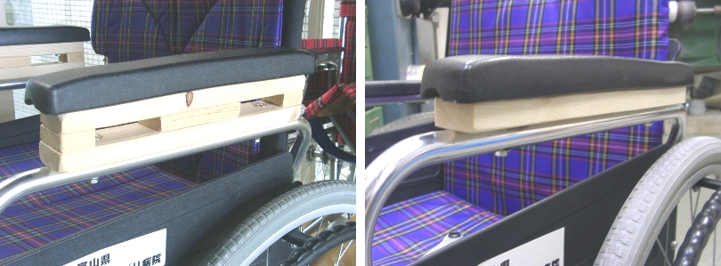
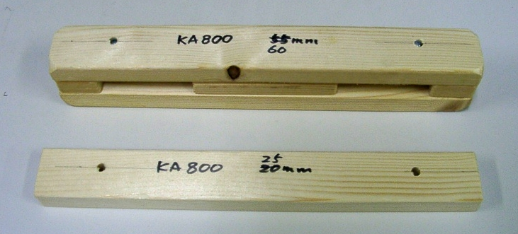

車いすのひじかけの高さ調整

当院では１０年ほど前から簡易型モジュール車いすのカワムラサイクルKA-800型を積極的に導入しております．しかしこの機種は多くの長所がありますが，ひじかけの高さを調整する機能がありません．またこの機種には標準のクッションがありますが，褥瘡のリスクや姿勢保持のために厚いクッションが必要になる場合もあります．このとき乗る人の位置がやや高くなり，ひじかけが届きにくくなり，座位姿勢が安定しなくなることがあります．
そこでこの問題を解決するために，ひじかけの下に木製のスペーサを入れてかさ上げする方法を考えてみました．何人かの方に使っていただいたところ，単純なわりにはぐらつきも少なく，役に立つことがわかりましたのでご紹介することにしました．

写真は，高さ６センチアップ用と２．５センチアップ用のスペーサです．材料は安価な１ｘ２（ワンバイツー）材を使っています．
２．５センチ用を使う場合は標準の２５ｍｍボルトの代わりに，５０ｍｍボルトを使います．６センチ用をロングボルトで取り付けるとひじかけが左右方向に不安定になりましたので，写真のように鬼目ナットを使い二階建て構造にしました．木材は木工用ボンドで接着してあります．車いすフレームへの接合には，４０ｍｍボルト，ひじかけとの接合には３０ｍｍボルトを使用しています．見かけはやや悪いのですが，期待した効果はあります．この方法は肘掛けの高さを頻繁に変更するには手間がかかる欠点はありますが，誤った操作をしてしまう余地はほとんどない利点もあります．
ひじかけの高さなどにわざわざ手間をかける必要はないと考えられる方もおられますが，実際に使っていただくと，安心感の違いを実感されるでしょう．
このようなひじかけの高さ調整で，特にお身体の調子の思わしくない人では快適さや安心感が改善して長い時間座れるようになる場合があります．しかし昨今，効果のほどが確かではないことにいくらかのコストを負担をする事例はあまり多くありません．これを低コストで実現することがこの道具の目的です．効果と価値を理解した上でコストを負担していただければなによりと思います．
このように日曜大工程度の工作と比較的小さなコストでもう少し広い選択枝を提供できます．
経済状態が悪くても，やるべきことはできます．
09/10/07 公開